건축산업기사 (2004-05-23 기출문제)
1과목: 건축계획
1. 파사드의 외관형식을 개방형으로 할 경우 가장 적합한 상점은?
- 서점
- 이발소
- 귀금속점
- 카메라점
(정답률: 50%)

2. 상점입면 구성의 5가지 광고요소가 아닌 것은?
- 주의(attention)
- 전시(display)
- 흥미(interest)
- 기억(memory)
(정답률: 알수없음)
3. 새로운 주택설계의 방향에 관하여 기술한 것 중 가장 부적당한 것은?
- 생활의 쾌적함을 증대시킨다.
- 가족본위의 생활을 추구하기 위해 각 실의 Privacy를 유지하여야 한다.
- 가사의 노동을 덜어주기 위해 주거의 단순화를 지향(持向)한다.
- 생활습관과 경제를 고려하여 좌식으로만 설계한다.
(정답률: 93%)
4. 주택의 복도 계획에서 옳지 않은 것은?
- 50m2이하 주택에 복도를 두는 것은 비경제적이다.
- 중복도는 채광, 통풍에 유리하다.
- 일반적으로 전체면적의 10% 정도이다.
- 통행상 서로 엇갈릴 때 옆으로 걸어가는 일을 피하기 위해서는 폭 1⑤~120㎝가 적당하다.
(정답률: 62%)
5. 주방에서의 작업순서가 가장 옳게 된 것은?
- 요리재료의 반입 - 세척 - 조리 - 배선
- 세척 - 요리재료의 반입 - 조리 - 배선
- 배선 - 세척 - 요리재료의 반입 - 조리
- 조리 - 세척 - 배선 - 요리재료의 반입
(정답률: 알수없음)
6. 한식주택의 특징에 대한 설명 중 가장 옳지 않은 것은?
- 주택의 평면은 은폐적이며 실의 조합으로 되어 있다.
- 가구의 종류와 형에 따라 실의 크기와 폭비가 결정된다.
- 한식주택의 실은 혼용도이다.
- 생활습관적으로 보면 좌식이다.
(정답률: 91%)
7. 복층형 아파트의 장점이 아닌 것은?
- 유효면적을 증가시킬 수 있으므로 50m2 이하의 주거형식에 경제적이다.
- 엘리베이터의 정지층수를 적게 할 수 있다.
- 주ㆍ야간별 생활공간을 층별로 나눌 수 있다.
- 양면개구에 의한 일조, 통풍 및 전망이 좋다.
(정답률: 45%)
8. 아파트 단위평면의 결정조건과 가장 거리가 먼 것은?
- 부엌과 욕실을 분산 배치한다.
- 동선은 단순하고 혼란하지 않도록 한다.
- 각 실은 타실을 통해서 통행하지 않아야 한다.
- 식사실과 부엌은 연결시킨다.
(정답률: 50%)
9. 사무소 건축의 설계에 있어서 사무실의 크기를 결정하는 가장 중요한 요소는?
- 방문자의 수
- 사무실의 위치
- 사업의 종류
- 사무원의 수
(정답률: 알수없음)
10. 사무소 건축의 엘리베이터에 대한 설명 중 옳지 않은 것은?
- 주요 출입구나 홀에 직접 면해서 배치한다.
- 외래자에게 직접 잘 알려질 수 있는 위치에 배치한다.
- 승강기의 배열은 단거리 보행으로 모든 승강기에 접근할 수 있도록 한다.
- Hall 넓이는 승강자 1인당 0.2m2 정도로 하는 것이 가장 좋다.
(정답률: 70%)
11. 대규모 사무소 건축 설계에 관한 기술 중 가장 옳지 않은 것은?
- 승강기의 출발층은 1개소로 한정하는 것이 운영면에서 효율적이다.
- 계단은 엘리베이터 홀에 되도록 가깝게 배치한다.
- 화장실은 가능한 한 분산 배치하여 사용에 편리하도록 한다.
- 메일 슈트(mail shute)는 엘리베이터 홀에 배치한다.
(정답률: 73%)
12. 상점건축의 쇼윈도 계획시 유리면의 반사방지를 위한 대책 중 잘못된 것은?
- 곡면유리를 사용해서 밖의 영상이 객의 시야에 들어오지 않게 한다.
- 유리를 사면으로 설치하여 밖의 영상이 객의 시야에 들어 오지 않게 한다.
- 쇼윈도 안의 조도를 외부 조도보다 낮게 한다.
- 해가리개로 일사를 막는다.
(정답률: 83%)
13. 각 상점의 방위에 대한 설명 중 가장 부적당한 것은?
- 부인용품점은 오후에 그늘이 지지 않는 방향이 좋다.
- 식료품점은 강한 석양을 피할 수 있는 방향이 좋다.
- 여름용품점은 도로의 남측을 택하고 북측광선을 취한다.
- 음식점은 도로의 남측이 좋다.
(정답률: 25%)
14. 학교 운영 방식에 관한 설명 중 옳지 않은 것은?
- U형 : 초등학교 저학년에 적합하며 보통 한 교실에 1~2개의 화장실을 가지고 있다.
- P형 : 교사의 수와 적당한 시설이 없으면 실시가 곤란하다.
- U+V형 : 특별교실이 많을수록 일반 교실의 이용률이 떨어진다.
- V형 : 각 교과의 순수율이 높고 학생의 이동이 적다.
(정답률: 알수없음)
15. 공장건축의 경제성 높은 입지조건이 아닌 것은?
- 교통, 노동력의 공급이 유리한 곳
- 자재의 취득이 편리한 곳
- 여러 종류의 공업이 집합하여 있는 곳
- 지반은 견고하고 습윤하지 않는 곳
(정답률: 알수없음)
16. 도서관 건축계획에서 장래 증축을 반드시 고려해야 할 부분은?
- 서고
- 열람실
- 사무실
- 캐럴
(정답률: 64%)
17. 공장의 레이아웃(layout) 계획에 대한 설명 중 부적당한 것은?
- 공장건축에 있어서 이용자의 심리적인 요구를 고려하여 내부환경을 결정하는 것을 의미한다.
- 작업장내의 기계설비, 작업자의 작업구역, 자재나 제품 두는 곳 등에 대한 상호관계의 검토가 필요하다.
- 고정식 레이아웃은 조선소와 같이 제품이 크고 수량이 적은 경우에 행해진다.
- 레이아웃은 공장규모의 변화에 대응할 수 있도록 충분한 융통성을 부여하여야 한다.
(정답률: 84%)
18. 학교건축에서 교실의 채광 및 조명에 대한 설명으로 부적당한 것은?
- 1방향 채광일 경우 반사광보다는 직사광을 이용하도록 한다.
- 일반적으로 교실에 비치는 빛은 칠판을 향해 있을 때 좌측에서 들어오는 것이 원칙이다.
- 칠판면의 조도가 책상면의 조도보다 높아야 한다.
- 교실 채광은 일조시간이 긴 방위를 택한다.
(정답률: 86%)
19. 학교건축에서 블록플랜에 관한 내용으로 옳지 않은 것은?
- 초등학교는 학년단위로 배치하는 것이 기본적인 원칙이다.
- 클러스터형이란 복도를 따라 교실을 배치하는 형식이다.
- 관리부분의 배치는 전체의 중심이 되는 곳이 좋다.
- 초등학교 저학년은 될 수 있으면 1층에 있게 하며, 교문에 근접시킨다.
(정답률: 74%)
20. 사무소건축 평면계획의 각실 분할방법에 대한 설명 중 가장 적절치 않은 것은?
- 크게 복도형식과 코어형식으로 나눌 수 있다.
- 코어형식과 복도형식은 다양하게 조합될 수 있다.
- 2중지역 배치는 복도의 한편에만 실들이 있기 때문에 고가(高價)이다.
- 3중지역배치는 고층사무소건축의 전형적인 해결책으로 간주되고 있으며, 사무실은 외벽을 따라 배치된다
(정답률: 37%)
2과목: 건축시공
21. 벽돌쌓기에서 통줄눈을 피하는 가장 큰 이유는?
- 방수
- 방습
- 방화
- 강도
(정답률: 50%)
22. 다음 그림과 같은 공정표에서 종속관계의 설명으로 옳지 않은 것은?
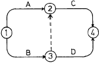
- C는 A작업에 종속된다.
- C는 B작업에 종속된다.
- D는 A작업에 종속된다.
- D는 B작업에 종속된다.
(정답률: 37%)
23. 건축공사의 시공속도에 관한 설명으로 옳지 않은 것은?
- 공사속도를 빠르게 할수록 직접비는 감소한다.
- 급속공사를 강행할수록 공사의 질은 조잡해진다.
- 시공속도는 간접비와 직접비의 합계가 최소가 되도록 하는 것이 가장 경제적이다.
- 매일 공사량은 손익 분기점 이상의 공사량을 실시하는 것이 채산되는 시공속도이다.
(정답률: 알수없음)
24. A.E 콘크리트의 특징중 옳지 않은 것은 어느 것인가?
- 동결 및 융해에 대한 저항이 증가된다.
- 수밀성이 크게 된다.
- 철근과의 부착 강도가 많이 증가한다.
- 단위 수량이 감소된다.
(정답률: 39%)
25. 창호 철물 중에 여닫이 문에 사용하지 않는 것은?
- 정첩
- 후로어힌지
- 레일(rail)
- 도아첵크
(정답률: 74%)
26. 벽돌의 품질을 결정하는데 가장 중요한 사항은 어느 것인가?
- 흡수율 및 인장강도
- 흡수율 및 전단강도
- 흡수율 및 휨강도
- 흡수율 및 압축강도
(정답률: 알수없음)
27. 콘크리트 공사에서 이어붓기 위치에 관한 설명 중 옳지 않은 것은?
- 보, 바닥판 이음은 그 간사이의 중앙부에서 수직으로 한다.
- 기둥은 기초판, 연결보 또는 바닥판 위에서 수평으로 한다.
- 벽은 문꼴 등 끊기좋고 또한 이음자리 막기와 떼어 내기에 편리한 곳에 수직 또는 수평으로 한다.
- 아치는 이어붓지 않는다.
(정답률: 42%)
28. 콘크리트의 균열에 대한 내용 중 방사형의 망상균열이 발생할 경우 가장 큰 균열의 원인은?
- 시멘트의 이상응결
- 시멘트의 이상팽창
- 철근량부족
- 시멘트의 수화열
(정답률: 73%)
29. 다음과 같은 특징을 갖는 제자리콘크리트 말뚝 공법은?
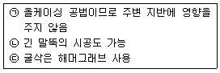
- 베노토 공법
- 이코스 공법
- 어스 드릴 공법
- 역순환 공법
(정답률: 36%)
30. 콘크리트 붓기에 관한 설명 중 부적당한 것은?
- 비비는 장소에서 먼 곳부터 붓기 시작하는 것이 좋다.
- 될 수 있는 한 낮은 위치에서 수직으로 부어 넣는 것이 좋다.
- 붓기를 끝낸 후 양생시 콘크리트는 진동을 받지 않아야 한다.
- 높은 벽이나 기둥은 하부에 된비빔, 상부에 묽은 비빔을 붓는 것이 좋다.
(정답률: 29%)
31. 철골의 주각을 기초에 고정시키는데 나중매립공법을 사용하는 경우는 다음 중 어떤곳에 해당하는가?
- 구조물이 고층건물일 경우
- 구조물의 이동조립을 가능하게 하기 위한 경우
- 앵커볼트의 지름이 작은 경우
- 앵커볼트의 지름이 큰 경우
(정답률: 알수없음)
32. 시트(Sheet)방수재료를 붙이는 방법이 아닌 것은?
- 온통부착
- 줄접착
- 점접착
- 원접착
(정답률: 19%)
33. 콘크리트를 부어넣은 후 콘크리트를 보양하는 방법 중 거푸집을 빨리 제거하고 단시일내에 소요강도를 얻을 수 있는 것은?
- 증기보양(steam curing)
- 습윤보양(moist curing)
- 전기보양(electric curing)
- 피막보양(membrane curing)
(정답률: 알수없음)
34. C.P.M방식에서 네트워크(Net work)수법의 용어 해설이 맞지 않는 것은?
- 액티비티(activity)-프로젝트를 구성하는 작업 단위
- 플로우트(float)-작업의 여유시간
- 주 공정선(critical path)-개시 결합점에서 종료 결합점에 이른 가장 긴 패스
- 슬랙(slack)-작업을 수행하는데 필요한 시간
(정답률: 알수없음)
35. 벽돌쌓기에서 방수상 가장 주의를 요하는 부분은?
- 창대쌓기
- 모서리쌓기
- 벽쌓기
- 기초쌓기
(정답률: 50%)
36. 철골공사의 공장작업순서를 바르게 나열한 것은?
- 원척도 → 본뜨기 → 금매김 → 절단 및 가공 → 구멍뚫기 → 가조립 → 본조립 → 검사
- 본뜨기 → 원척도 → 금매김 → 절단 및 가공 → 구멍뚫기 → 가조립 → 본조립 → 검사
- 원척도 → 금매김 → 본뜨기 → 절단 및 가공 → 구멍뚫기 → 가조립 → 본조립 → 검사
- 원척도 → 본뜨기 → 금매김 → 구멍뚫기 → 절단 및 가공 → 가조립 → 본조립 → 검사
(정답률: 50%)
37. 외벽(1B 쌓기, 붉은벽돌, 기존형)의 면적이 100m2, 내벽 (0.5B쌓기, 시멘트벽돌, 표준형)의 면적이 70m2 인 건물을 시공할 때 구입해야 할 벽돌량으로서 가장 적당한 것은?
- 붉은 벽돌 13000매, 시멘트벽돌 5250매
- 붉은 벽돌 13390매, 시멘트벽돌 5513매
- 붉은 벽돌 13650매, 시멘트벽돌 5250매
- 붉은 벽돌 13390매, 시멘트벽돌 4687매
(정답률: 10%)
38. 도장공사에서 뿜칠로 해야만 그 효과가 가장 좋은 도장 재료는?
- 유성페인트(oil paint)
- 래커(lacquer)
- 수성페인트(water paint)
- 바니쉬(varnish)
(정답률: 알수없음)
39. 심대 끝에 주철제 원추형의 마개가 달린 외관을 2∼2.6t 정도의 추로 내리쳐서 마개와 외관을 지중에 박아 소정의 길이에 도달하면 내부의 마개와 추를 빼내고 콘크리트를 넣고 추로 다져 구근을 만드는 말뚝은?
- 페디스탈 파일(pedestal pile)
- 콤프레솔 파일(compressol pile)
- 레이몬드 파일 (raymond pile)
- 프랭키 파일 (franky pile)
(정답률: 28%)
40. 창유리로 가장 많이 사용되는 판유리의 종류는?
- 프린트유리
- 고규산유리
- 보헤미아유리
- 크라운유리
(정답률: 31%)
3과목: 건축구조
41. 그림과 같은 트러스에서 이동지점 B에서의 반력은 얼마인가?
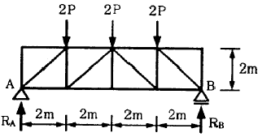
- 0
- P
- 2P
- 3P
(정답률: 14%)
42. 단면 bw×d = 400mm×550mm인 T형보에 인장철근이 5-D19 배근되어 있을 때 인장 철근비는? (단, 유효폭 b는 1500mm, 1-D19의 단면적은 287mm2이다.)
- 0.0065
- 0.0060
- 0.0017
- 0.0012
(정답률: 19%)
43. 1단은 고정지점, 1단은 자유인 높이 4m의 H-형강 기둥의 이론적 좌굴길이는?
- 2m
- 4m
- 8m
- 16m
(정답률: 31%)
44. 철근콘크리트의 부착응력에 대한 설명으로 가장 옳지 않은 것은?
- 압축강도가 큰 콘크리트일수록 부착력은 커진다.
- 콘크리트의 부착력은 철근의 길이에 반비례한다.
- 철근의 표면상태와 단면모양에 따라 부착력이 증감 된다.
- 부착력은 정착길이를 크게 증가함에 따라서 비례증가되지는 않는다.
(정답률: 60%)
45. 보의 주철근의 수평 순간격은?
- 3.0㎝ 이상, 굵은 골재 최대치수의 4/3이상, 철근의 공칭지름의 2배 이상
- 2.5㎝ 이상, 굵은 골재 최대치수의 4/3이상, 철근의 공칭지름 이상
- 2.5㎝ 이상, 굵은 골재 최대치수 이상, 철근의 공칭지름의 1/3배 이상
- 4.0㎝ 이상, 굵은 골재 최대치수의 1.5배 이상, 철근의 공칭지름 이상
(정답률: 43%)
46. 그림의 단순보에 관한 기술 중 옳지 않은 것은?
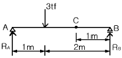
- RA의 값은 2tf이다.
- RB의 값은 1tf이다.
- C점의 전단력 값은 2tf이다.
- C점의 휨모멘트 값은 1tfㆍm이다.
(정답률: 22%)
47. 직경 22㎜, 길이 1m의 강봉(鋼棒)에 6tf의 인장력을 작용시켰더니 0.4㎜늘어났다. 길이 방향의 변형률은?
- 0.0001
- 0.0002
- 0.0003
- 0.0004
(정답률: 알수없음)
48. 보의 폭 b = 350mm, fck = 24MPa인 철근콘크리트 단근보를 강도설계법으로 설계하고자 한다. 콘크리트의 전압축응력은 얼마인가? (단, 응력블록의 깊이 a = 100mm, 1MPa = 10kgf/cm2, 1N = 0.1kgf)
- 589kN
- 612kN
- 657kN
- 714kN
(정답률: 알수없음)
49. 그림과 같은 트러스에서 T의 부재력은?
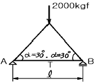
- 1000㎏f
- 866㎏f
- 1732㎏f
- 2000㎏f
(정답률: 알수없음)
50. 과도한 처짐에 의해 손상되기 쉬운 비구조요소를 지지 또는 부착하지 않은 바닥구조의 처짐한계는 다음 중 어느 값 이하가 되어야 하는가? (단, 활하중에 의한 순간처짐)
- ℓ/180
- ℓ/240
- ℓ/360
- ℓ/480
(정답률: 24%)
51. 치수190㎜×90㎜×57㎜인 표준형 벽돌로 두께 2.5B 벽체쌓기를 하였을때 벽두께는? (단, 공간쌓기가 아님)
- 430㎜
- 490㎜
- 510㎜
- 290㎜
(정답률: 50%)
52. 철근콘크리트 구조의 특징에 대한 설명으로 옳지 않은 것은?
- 보의 압축응력은 콘크리트가 부담하고, 인장응력은 철근이 부담한다.
- 콘크리트는 철근이 녹스는 것을 방지한다.
- 철근과 콘크리트는 선팽창계수가 거의 같다.
- 자체중량은 크지만 시공과 강도계산이 간단하다.
(정답률: 47%)
53. 그림과 같은 단주에 편심하중 P = 240㎏f이 작용할 때 단주에 생기는 최대 응력도의 값으로 맞는 것은?
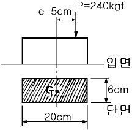
- 5㎏f/㎝2
- 10㎏f/㎝2
- 15㎏f/㎝2
- 20㎏f/㎝2
(정답률: 8%)
54. 그림에서 C점의 휨모멘트는? (단, A점은 3부재를 용접으로 접합한 고정 절점이다. k1는 부재 AB의 강비이고 k2는 부재 AC의 강비이다.)
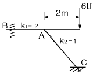
- 2tfㆍm
- 4tfㆍm
- 6tfㆍm
- 8tfㆍm
(정답률: 알수없음)
55. 목구조에서 부재의 이음과 맞춤을 할 때 주의사항으로 옳지 않은 것은?
- 부재의 응력이 적은 곳에서 한다.
- 공작이 간단한 것을 쓰고 모양에 치중하지 않는다.
- 맞춤면은 정확히 가공하여 서로 밀착되어 빈틈이 없게 한다.
- 이음과 맞춤의 단면은 응력의 방향을 무시하고 시공하기에 쉬워야 한다.
(정답률: 알수없음)
56. 단근장방형보에서 설계강도 Ø Mn을 강도설계법에 의해 구하면 얼마인가? (단, Ø = 0.9, fck = 21MPa, fy = 400MPa, b = 300mm, d = 550mm, 3-D22(AS = 1161mm2), 1MPa = 10㎏f/㎝2, 1N = 0.1kgf )
- 211760kNㆍmm
- 246230kNㆍmm
- 287370kNㆍmm
- 306320kNㆍmm
(정답률: 28%)
57. 블록구조에 관한 설명 중 옳지 않은 것은?
- 대린벽 중심선간의 거리를 벽의 길이라 한다.
- 보강콘크리트블록조의 내력벽의 벽량은 15cm/m2 이상으로 한다.
- 테두리보는 분산된 벽체를 일체로 연결하여 하중을 균등히 분포시키는 역할을 한다.
- 기초보의 두께는 벽체의 두께보다 두껍게 하면 안되며, 춤은 처마높이의 1/20 이상으로 한다.
(정답률: 알수없음)
58. 강도설계법에서 보통 철근콘크리트 휨부재의 강도감소계수는?
- 0.70
- 0.80
- 0.85
- 0.95
(정답률: 34%)
59. 철근콘크리트 구조의 철근 간격에 대한 설명 중 옳지 않은 것은?
- 띠철근 기둥의 주근 철근의 순간격 : 주근 직경의 2.5배 이상 또한 30mm 이상
- 띠철근의 수직간격 : 종방향 철근지름의 16배 이하, 띠철근의 48배 이하 또한 기둥 단면의 최소 치수 이하
- 부재축에 직각으로 설치되는 스터럽의 간격 : 스터럽 직경의 0.5배 이하 또한 600mm 이하
- 슬래브의 휨 주철근의 간격 : 슬래브 두께의 3배 이하 또한 400mm 이하
(정답률: 알수없음)
60. 그림과 같은 등분포하중을 받는 단순보의 최대 처짐은?
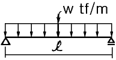
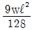
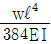
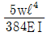
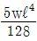
(정답률: 54%)
4과목: 건축설비
61. 원심식 펌프의 일종으로 임펠러 주위에 안내날개가 없으며 온수순환용으로 사용되는 펌프는?
- 마찰 펌프
- 제트 펌프
- 볼류트 펌프
- 기어 펌프
(정답률: 46%)
62. 감시제어반에 있어서 제어의 종류와 표시법에 대한 조합 중 옳지 않은 것은?
- 경보 및 고장표시 : 부저 또는 벨
- 정지표시 : 오렌지색램프
- 운전표시 : 적색램프
- 전원표시 : 백색램프
(정답률: 알수없음)
63. 증기난방의 장점이 아닌 것은?
- 난방부하에 따른 실내 방열량 조정이 쉽다.
- 실내온도 상승이 빠르다.
- 예열시간이 짧다.
- 한랭지에서 동결의 위험이 적다.
(정답률: 67%)
64. 열관류에 대한 설명으로 가장 알맞은 것은?
- 고체벽을 사이에 두고 양쪽의 유체사이에 열이 이동하는 현상
- 물체의 온도를 1℃ 상승시키는데 필요한 열량
- 유체와 고체벽 사이에 열이 이동하는 현상
- 열복사, 열대류와 함께 열전달 3방식의 하나로 열이 어떠한 물체내의 고온 부분에서 저온부분으로 전달되어 가는 현상
(정답률: 알수없음)
65. 정화조에서 유입된 오수를 혐기성균에 의하여 소화 작용으로 분리침전이 이루어 지도록 하는 곳은?
- 산화조
- 부패조
- 소독조
- 여과조
(정답률: 30%)
66. 수격작용을 방지하기 위한 방법으로 적당하지 않은 것은?
- 급격한 밸브 폐쇄는 피한다.
- 기구류 부근에 공기실을 설치한다.
- 관내의 유속을 빠르게 한다.
- 감압밸브를 설치한다.
(정답률: 47%)
67. 압력 수조식 급수설계에서 최고층 수전까지의 수직높이가 9[m]이고 관내 마찰손실수두가 5[m] 일때 최고층 수전의 급수에 필요한 최저 필요 압력은 얼마인가? (단, 최고층 수전의 소요압력은 0.7㎏/㎝2임.)
- 0.5㎏/㎝2
- 0.7㎏/㎝2
- 0.9㎏/㎝2
- 2.1㎏/㎝2
(정답률: 22%)
68. 배수관의 관경결정을 위해 사용되는 기구배수부하단위는 어느 것을 기준으로 하여 정해지는가?
- 대변기 배수량
- 세면기 배수량
- 소변기 배수량
- 비데 배수량
(정답률: 알수없음)
69. 피뢰설비의 4등급 중 높은 산 위에 있는 관측소 등에 시설하며, 어떠한 뇌격에 대해서도 건물이나 내부에 있는 사람에게 위해를 가하지 않는 방식은?
- 증강보호
- 완전보호
- 보통보호
- 간이보호
(정답률: 47%)
70. 연면적이 2000m2의 사무소에서 다음과 같은 조건이 있을 때 사무소에 필요한 1일당 급수량(사용수량)은? (단, 유효면적비율 56%, 거주인원 0.2인/m2, 1인 1일당 급수량 150ℓ/d)
- 3.36m3/d
- 4.36m3/d
- 33.6m3/d
- 40.6m3/d
(정답률: 36%)
71. 드렌처 설비에 대한 설명으로 가장 알맞은 것은?
- 수막을 형성하여 화재의 연소를 방지하는 설비
- 연기를 배출시키는 설비
- 화재를 알리는 경보설비
- 공기압을 조절하는 설비
(정답률: 50%)
72. 음료수의 수질기준에서 물의 경도는 염류의 양을 무엇의 농도로 환산하여 나타내는 것인가?
- 수소이온농도
- 용존산소
- 탄산칼슘
- BOD
(정답률: 28%)
73. 광원에서의 발산 광속 중 60~90[%]는 윗방향으로 향하여 천장이나 윗벽 부분에서 반사되고, 나머지 빛이 아래방향으로 향하는 방식의 조명 기구는?
- 전반확산 조명 기구
- 반간접 조명 기구
- 직접 조명 기구
- 반직접 조명 기구
(정답률: 알수없음)
74. 어떤 방의 난방부하가 4500㎉/h 일때 증기 방열기의 소요 방열면적은?
- 10m2
- 8.2m2
- 6.9m2
- 5m2
(정답률: 알수없음)
75. 방열기에 관해 그림과 같은 표지에서 상단의 20은 무엇을 나타내는가?
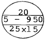
- 방열기의 섹션수
- 유입관경
- 유출관경
- 방열기의 높이
(정답률: 20%)
76. 건축설비에 관한 용어의 조합 중 관련이 가장 먼 것은?
- 전기설비 - 수요율
- 공조설비 - 실지수
- 조명설비 - 광속발산도
- 급수설비 - 동시사용률
(정답률: 15%)
77. 직류의 경우 100[V]의 전압에 400[W]의 전열기를 사용하였다면 전류는 몇 암페어[A]인가?
- 0.4
- 4
- 0.25
- 2.5
(정답률: 19%)
78. 면적이 100[m2]인 건물의 조명 설비에서 40[W]짜리 형광등 10개를 설치할 때 평균 조도는 얼마인가? (단, 40[W] 형광등 1개의 광속은 2000[lm],조명율 60[%], 감광보상률 1.5이다.)
- 40[lux]
- 80[lux]
- 400[lux]
- 800[lux]
(정답률: 25%)
79. 정원등 등에 사용하는 지중매설배선의 표시기호는?
(정답률: 22%)
80. 감지기 주위의 공기가 일정한 농도의 연기를 포함하게 되면 작동하는 감지기는?
- 차동식 감지기
- 정온식 감지기
- 보상식 감지기
- 광전식 감지기
(정답률: 20%)
5과목: 건축관계법규
81. 주거용 건축물의 바닥면적의 합계가 500m2를 초과할 경우 급수관 지름의 최소 기준으로 가장 적합한 것은?
- 25㎜ 이상
- 32㎜ 이상
- 40㎜ 이상
- 50㎜ 이상
(정답률: 24%)
82. 기계식주차장의 사용검사의 유효기간과 정기검사의 유효기간은?
- 사용검사 - 2년, 정기검사 - 2년
- 사용검사 - 2년, 정기검사 - 3년
- 사용검사 - 3년, 정기검사 - 2년
- 사용검사 - 3년, 정기검사 - 3년
(정답률: 42%)
83. 자주식주차장으로서 건축물식에 의한 노외주차장의 차로의 기준으로 옳은 것은?
- 높이는 주차바닥면으로부터 2.1m 이상으로 할 것
- 굴곡부는 자동차가 5m 이상의 내면반경으로 회전이 가능하도록 할 것
- 경사로의 종단구배는 직선부분에서 14% 를 초과하지 않도록 할 것
- 경사로의 차로너비는 직선형인 경우에는 3.6m 이상으로 할 것
(정답률: 16%)
84. 건축물관련 건축기준의 허용오차의 범위가 3%이내인 것은?
- 건축물 높이
- 출구너비
- 평면길이
- 바닥판 두께
(정답률: 47%)
85. 관람석 또는 집회실로서 그 바닥면적이 200m2이상인 것의 거실의 반자높이를 4m이상 설치하여야 하는 용도가 아닌것은?
- 문화 및 집회시설 중 전시장
- 의료시설 중 장례식장
- 문화 및 집회시설 중 공연장
- 위락시설 중 주점영업
(정답률: 알수없음)
86. 노외주차장에서 주차장내부를 볼 수 있는 폐쇄회로 텔레비전 및 녹화장치를 설치해야 되는 주차대수 최소규모는?
- 21대
- 31대
- 41대
- 51대
(정답률: 27%)
87. 건축법상 다가구주택의 용어정의에 해당되지 않는 것은?
- 주택으로 쓰이는 층수(지하층을 제외)가 3개층 이하일 것
- 19세대 이하가 거주할 수 있을 것
- 1개동의 주택으로 쓰이는 바닥면적의 합계가(지하주차장면적을 제외)가 660m2 이하일 것
- 독립된 주거의 형태가 아닐 것
(정답률: 알수없음)
88. 대지안의 조경에 관한 기준 중 틀린 것은?
- 설치대상은 연면적 200m2이상 건축물이다.
- 읍· 면의 자연녹지지역은 설치대상에서 제외된다.
- 옥상부분의 조경면적의 3분의 2에 해당하는 면적을 대지안의 조경면적으로 산정할 수 있다.
- 건설교통부장관은 식재기준, 조경시설물의 종류 등 조경에 필요한 사항을 고시할 수 있다.
(정답률: 알수없음)
89. 특별시장ㆍ광역시장ㆍ시장ㆍ군수 또는 구청장이 설치하는 노외주차장에는 주차대수 몇대마다 1면의 장애인전용 주차구획을 설치하는가?
- 30대
- 40대
- 50대
- 60대
(정답률: 36%)
90. 에너지절약계획서를 제출하여야 하는 대상 건축물의 기준으로 옳지 않은 것은?
- 바닥면적의 합계가 500제곱미터 이상인 일반목욕장
- 바닥면적의 합계가 2000제곱미터 이상인 숙박시설
- 바닥면적의 합계가 1000제곱미터 이상인 실내수영장
- 바닥면적의 합계가 3000제곱미터 이상인 판매 및 영업시설중 상점(중앙집중식 냉난방설비 설치)
(정답률: 9%)
91. 목조 건축물의 외벽 및 처마밑의 연소 우려가 있는 부분을 방화구조로 하고, 지붕을 불연재료로 해야하는 목조 건축물의 규모 기준은?
- 연면적 500m2 이상
- 연면적 1000m2 이상
- 연면적 1500m2 이상
- 연면적 2000m2 이상
(정답률: 37%)
92. 낙뢰의 우려가 있는 건축물 또는 높이 20m 이상의 건축물에 설치하여야 하는 피뢰설비의 기준으로 옳지 않은 것은?
- 위험물저장 및 처리시설이 아닌 경우 돌침 또는 피뢰도체는 보호각의 기준을 60도로 한다.
- 돌침은 건축물의 맨 윗부분으로부터 25㎝ 이상 돌출시켜 설치한다.
- 피뢰도체 및 피뢰도선은 가연성 물질과는 20㎝ 이상, 전선· 전화선 또는 가스관과는 60㎝ 이상의 거리를 둔다.
- 인하도선 사이의 간격은 50m 이하로 하고, 각 인하도선당 1개 이상의 접지극을 지하 3m 이상 또는 상수면 밑에 매설한다.
(정답률: 44%)
93. 노상주차장의 구조 및 설비기준으로 틀린 것은?
- 자동차전용도로 또는 고가도로에 설치하여서는 아니된다.
- 주간선도로에 설치하여서는 아니된다.
- 너비 6m 미만의 도로에 설치하여서는 아니된다.
- 종단구배가 6%를 초과하는 도로에 설치하여서는 아니된다.
(정답률: 40%)
94. 건축물에 대한 주차장의 부설 명령이 있는 경우 대지 경계선으로 부터 직선거리 얼마이내의 장소에 주차장을 설치해야 하는가?
- 50m
- 100m
- 300m
- 600m
(정답률: 39%)
95. 주차대수 1대에 대한 주차장의 주차단위 구획이 잘못 기술된 것은? (단, 주차구획은 너비×길이 임)
- 일반주차장 : 2.3m×5.0m 이상
- 지체장애인 전용주차장 : 3.3m×5.0m 이상
- 평행주차형식 : 2.0m×6.0m 이상
- 주거지역의 보도와 차도의 구분이 없는 도로에서의 평행주차형식 : 2.3m×5.0m 이상
(정답률: 34%)
96. 다음 그림과 같은 건축물의 높이로서 맞는 것은? (단, 망루의 수평투영면적은 건축면적의 1/8임)
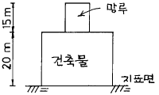
- 35m
- 30m
- 23m
- 20m
(정답률: 9%)
97. 그림과 같은 단면을 갖는 거실의 평균 반자 높이는?
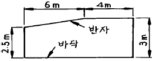
- 2.5m
- 3.0m
- 2.85m
- 2.75m
(정답률: 30%)
98. 건축물의 내부에 설치하는 피난계단의 구조기준이 잘못된 것은?
- 계단실은 창문ㆍ출입구 기타 개구부를 제외한 당해 건축물의 다른 부분과 내화구조의 벽으로 구획할 것
- 계단실의 실내에 접하는 부분의 마감은 불연재료로할 것
- 건축물의 내부에서 계단실로 통하는 출입구의 유효너비는 1.2m이상일 것
- 건축물의 내부와 접하는 창문등(출입구를 제외)은 망이 들어 있는 유리의 붙박이창으로서 그 면적을 각각 1m2이하로 할 것
(정답률: 19%)
99. 주요구조부가 내화구조 또는 불연재료로 된 16층의 아파트의 경우 거실의 각부분으로부터 직통계단까지의 최대 보행 거리는?
- 30미터
- 40미터
- 50미터
- 60미터
(정답률: 46%)
100. 방화구획의 설치기준에 대한 기술 중 틀린 것은?
- 3층 이상의 층과 지하층은 층마다 구획한다.
- 10층 이하의 층에서 바닥면적 1000m2 이내마다 구획 한다.
- 11층 이상의 층에서 벽 및 반자의 실내에 접하는 부분의 마감을 불연재료로 하고 스프링클러 설비가 되어있는 경우 바닥면적 1500m2 이내마다 구획한다.
- 11층 이상의 층에서 스프링클러 설비가 되어 있는 경우 바닥면적 500m2 이내마다 구획한다.
(정답률: 9%)